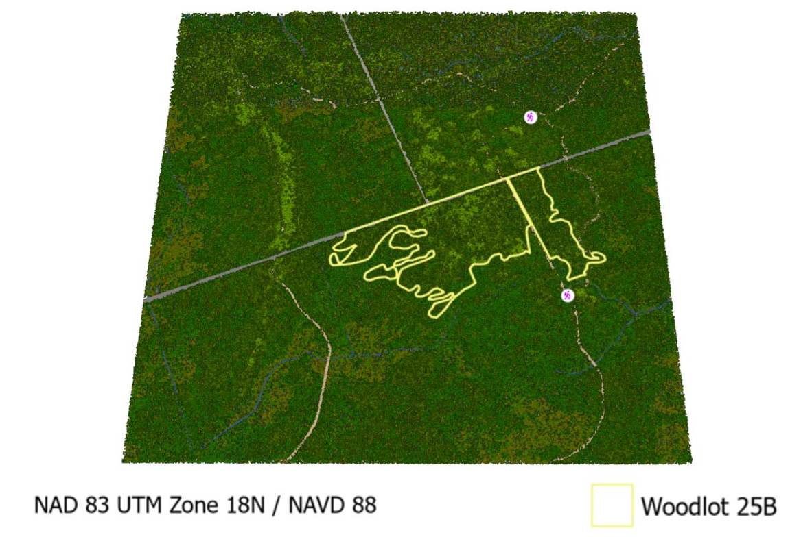

Experience Builder Web Application
APP CONTENT
LiDAR 3D Woodlot Scenes
The team created two 3D scenes of woodlots within the Larose Forest. Below are static maps of created 3D Scenes from the ArcGIS Pro desktop application. To explore the 3D woodlots more, click on the woodlot name below to view created web scenes to explore the rerouted trails and woodlots in ArcGIS online!
Woodlot 22A Woodlot 25B Fly-Over Video of Woodlot 25B
Alternative Trails
Four alternative trails were derived: three for the 22A woodlot, and one in the 25B woodlot. The proposed trails are similar in length to the existing trails. In the figures below, existing trails are shown in yellow (motorized) and green (non-motorized), and the proposed trails are in red.


Potential Income from Harvesting
Should harvesting take place within the woodlots as proposed by the Forest Plan, the figures below show the income that could be potentially generated for the County, based on the estimated values provided by the client.


Cartographic Output
iNSERT POSTER HERE?